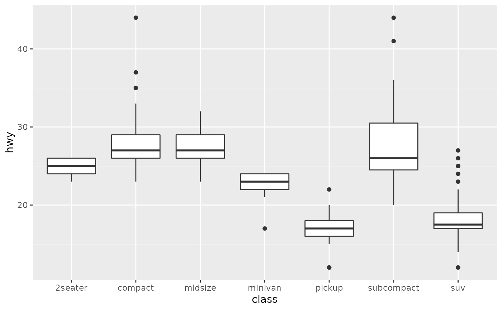
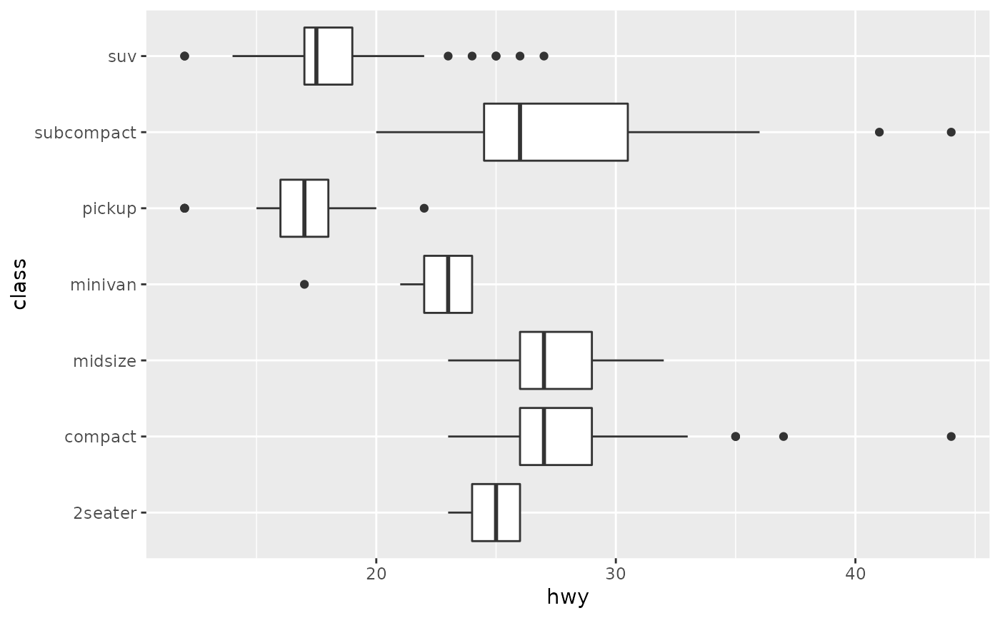
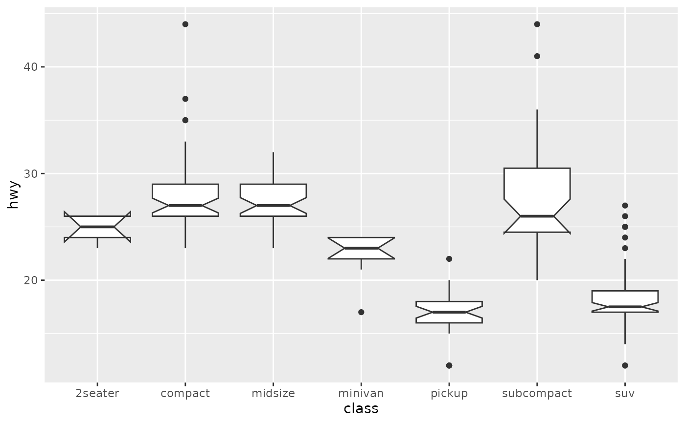
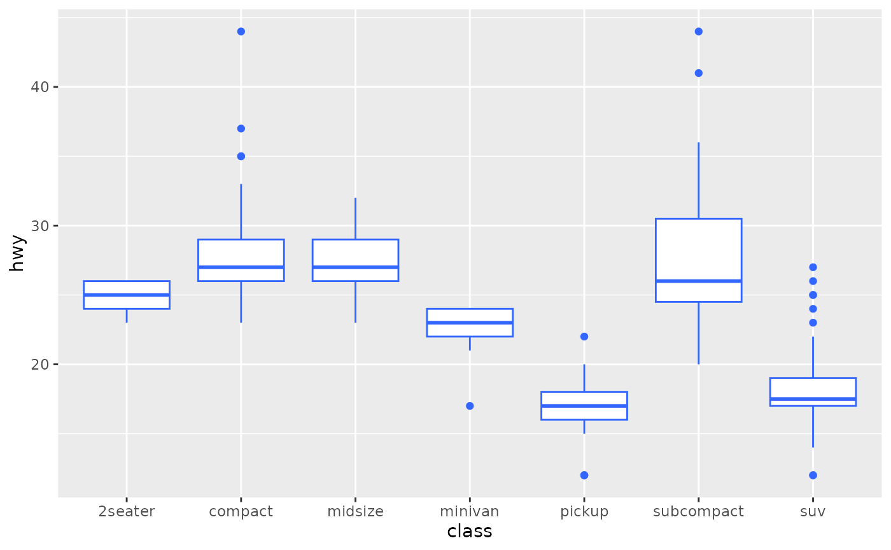
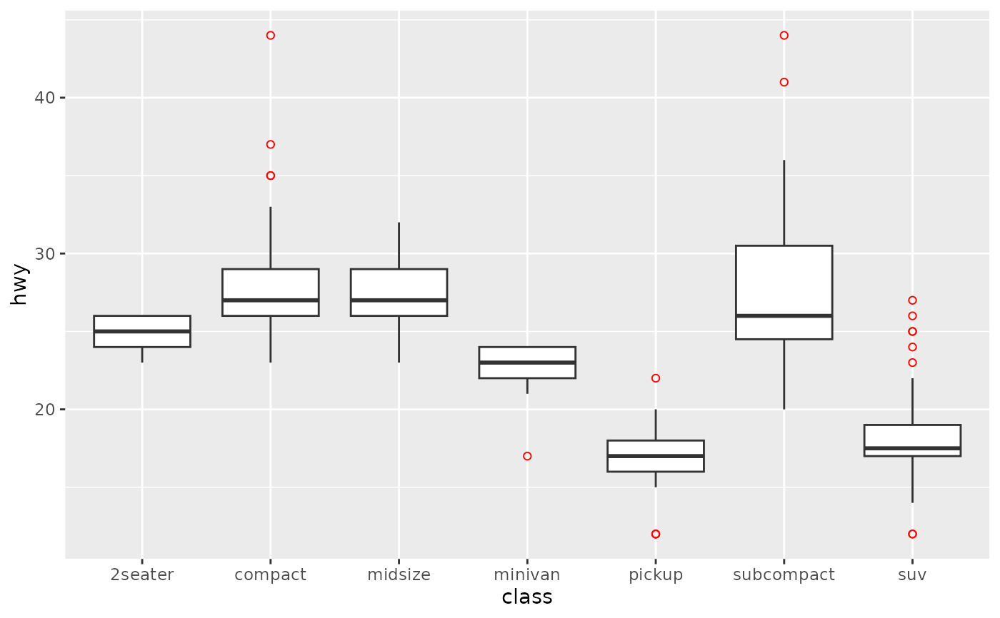
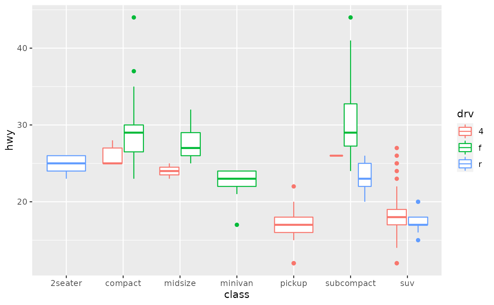
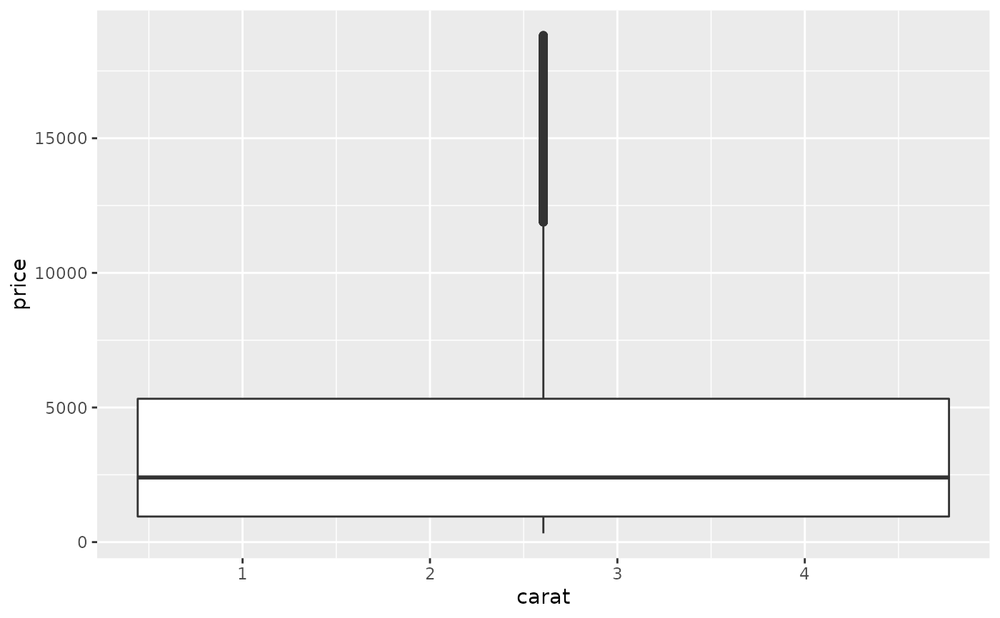
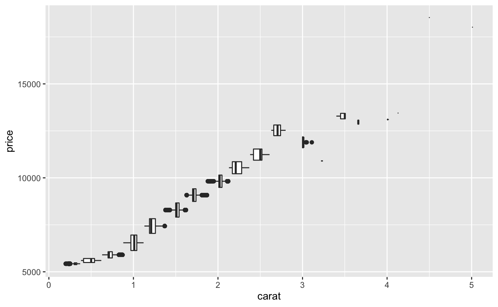
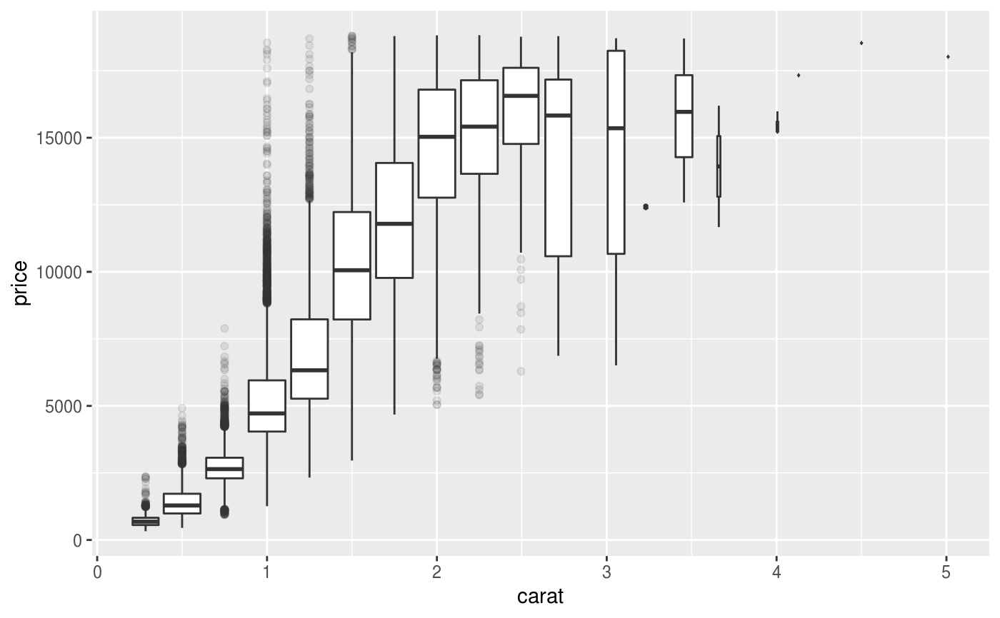
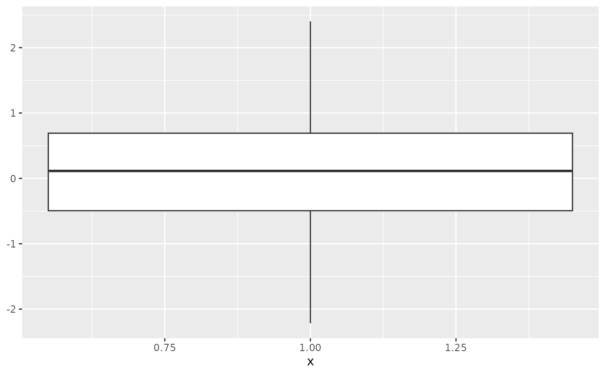

A box and whiskers plot (in the style of Tukey)
Source:R/geom-boxplot.r, R/stat-boxplot.r
geom_boxplot.RdThe boxplot compactly displays the distribution of a continuous variable. It visualises five summary statistics (the median, two hinges and two whiskers), and all "outlying" points individually.
geom_boxplot(mapping = NULL, data = NULL, stat = "boxplot", position = "dodge2", ..., outlier.colour = NULL, outlier.color = NULL, outlier.fill = NULL, outlier.shape = 19, outlier.size = 1.5, outlier.stroke = 0.5, outlier.alpha = NULL, notch = FALSE, notchwidth = 0.5, varwidth = FALSE, na.rm = FALSE, show.legend = NA, inherit.aes = TRUE) stat_boxplot(mapping = NULL, data = NULL, geom = "boxplot", position = "dodge2", ..., coef = 1.5, na.rm = FALSE, show.legend = NA, inherit.aes = TRUE)
Arguments
| mapping | Set of aesthetic mappings created by |
|---|---|
| data | The data to be displayed in this layer. There are three options: If A A |
| position | Position adjustment, either as a string, or the result of a call to a position adjustment function. |
| ... | Other arguments passed on to |
| outlier.colour, outlier.color, outlier.fill, outlier.shape, outlier.size, outlier.stroke, outlier.alpha | Default aesthetics for outliers. Set to In the unlikely event you specify both US and UK spellings of colour, the US spelling will take precedence. Sometimes it can be useful to hide the outliers, for example when overlaying
the raw data points on top of the boxplot. Hiding the outliers can be achieved
by setting |
| notch | If |
| notchwidth | For a notched box plot, width of the notch relative to
the body (defaults to |
| varwidth | If |
| na.rm | If |
| show.legend | logical. Should this layer be included in the legends?
|
| inherit.aes | If |
| geom, stat | Use to override the default connection between
|
| coef | Length of the whiskers as multiple of IQR. Defaults to 1.5. |
Summary statistics
The lower and upper hinges correspond to the first and third quartiles
(the 25th and 75th percentiles). This differs slightly from the method used
by the boxplot() function, and may be apparent with small samples.
See boxplot.stats() for for more information on how hinge
positions are calculated for boxplot().
The upper whisker extends from the hinge to the largest value no further than 1.5 * IQR from the hinge (where IQR is the inter-quartile range, or distance between the first and third quartiles). The lower whisker extends from the hinge to the smallest value at most 1.5 * IQR of the hinge. Data beyond the end of the whiskers are called "outlying" points and are plotted individually.
In a notched box plot, the notches extend 1.58 * IQR / sqrt(n).
This gives a roughly 95% confidence interval for comparing medians.
See McGill et al. (1978) for more details.
Aesthetics
geom_boxplot() understands the following aesthetics (required aesthetics are in bold):
xloweruppermiddleyminymaxalphacolourfillgrouplinetypeshapesizeweight
Learn more about setting these aesthetics in vignette("ggplot2-specs").
Computed variables
- width
width of boxplot
- ymin
lower whisker = smallest observation greater than or equal to lower hinge - 1.5 * IQR
- lower
lower hinge, 25% quantile
- notchlower
lower edge of notch = median - 1.58 * IQR / sqrt(n)
- middle
median, 50% quantile
- notchupper
upper edge of notch = median + 1.58 * IQR / sqrt(n)
- upper
upper hinge, 75% quantile
- ymax
upper whisker = largest observation less than or equal to upper hinge + 1.5 * IQR
References
McGill, R., Tukey, J. W. and Larsen, W. A. (1978) Variations of box plots. The American Statistician 32, 12-16.
See also
geom_quantile() for continuous x,
geom_violin() for a richer display of the distribution, and
geom_jitter() for a useful technique for small data.
Examples
p + geom_boxplot(notch = TRUE)#>#>p + geom_boxplot(varwidth = TRUE)p + geom_boxplot(fill = "white", colour = "#3366FF")# By default, outlier points match the colour of the box. Use # outlier.colour to override p + geom_boxplot(outlier.colour = "red", outlier.shape = 1)# Remove outliers when overlaying boxplot with original data points p + geom_boxplot(outlier.shape = NA) + geom_jitter(width = 0.2)# Boxplots are automatically dodged when any aesthetic is a factor p + geom_boxplot(aes(colour = drv))# You can also use boxplots with continuous x, as long as you supply # a grouping variable. cut_width is particularly useful ggplot(diamonds, aes(carat, price)) + geom_boxplot()#> Warning: Continuous x aesthetic -- did you forget aes(group=...)?# Adjust the transparency of outliers using outlier.alpha ggplot(diamonds, aes(carat, price)) + geom_boxplot(aes(group = cut_width(carat, 0.25)), outlier.alpha = 0.1)# It's possible to draw a boxplot with your own computations if you # use stat = "identity": y <- rnorm(100) df <- data.frame( x = 1, y0 = min(y), y25 = quantile(y, 0.25), y50 = median(y), y75 = quantile(y, 0.75), y100 = max(y) ) ggplot(df, aes(x)) + geom_boxplot( aes(ymin = y0, lower = y25, middle = y50, upper = y75, ymax = y100), stat = "identity" )